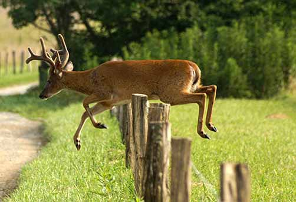
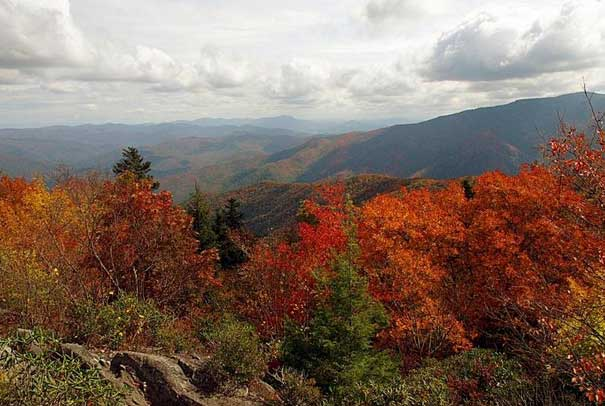

Park Weather
Elevations in the park range from approximately 875 feet to 6,643 feet and the topography can drastically affect local weather. Temperatures can vary 10-20 degrees Fahrenheit from mountain base to top, and clear skies lower down do not guarantee equally pleasant weather at higher elevations. Rainfall averages 55 inches per year in the lowlands to 85 inches per year at Clingmans Dome. Some prior planning and weather-wise clothing will help ensure an enjoyable visit during any season.
learn moreWildlife
Viewing wildlife in the Smokies can be challenging because most of the park is covered by dense forest. Open areas like Cataloochee and Cades Cove offer some of the best opportunities to see white-tailed deer, elk, black bear, raccoon, turkeys, woodchucks, and other animals. The narrow, winding road of Roaring Fork Motor Nature Trail encourages motorists to travel at a leisurely pace and sometimes yields sightings of bear and other wildlife. During winter wildlife is more visible because deciduous trees have lost their leaves.
 learn moreCades Cove
Cades Cove is a broad, verdant valley surrounded by mountains and is one of the most popular destinations in the Great Smokies. The valley has a rich history. For hundreds of years Cherokee Indians hunted in Cades Cove but archeologists have found no evidence of major settlements. Cades Grove offers some of the best opportunities for wildlife viewing in the park. Large numbers of white-tailed deer are frequently seen, and sightings of black bear, coyote, ground hog, turkey, raccoon, skunk, and other animals are also possible.
learn moreVisiting in the Fall
The park usually experiences an autumn leaf season of several weeks as fall colors travel down the mountain sides from high elevation to low. However, the timing of fall color change depends upon so many variables that the exact dates of "peak" season are impossible to predict in advance. The fall color display usually reaches peak at mid and lower elevations between mid-October and early November. This is the park's most spectacular display as it includes such colorful trees as sugar maple, scarlet oak, sweetgum, red maple, and the hickories.
 learn more